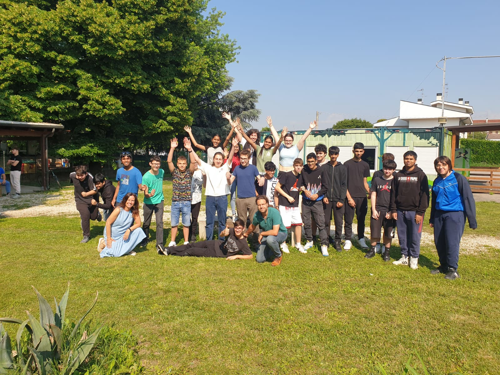
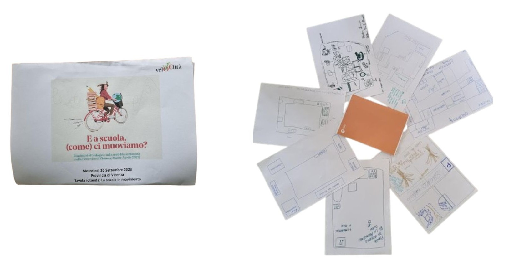
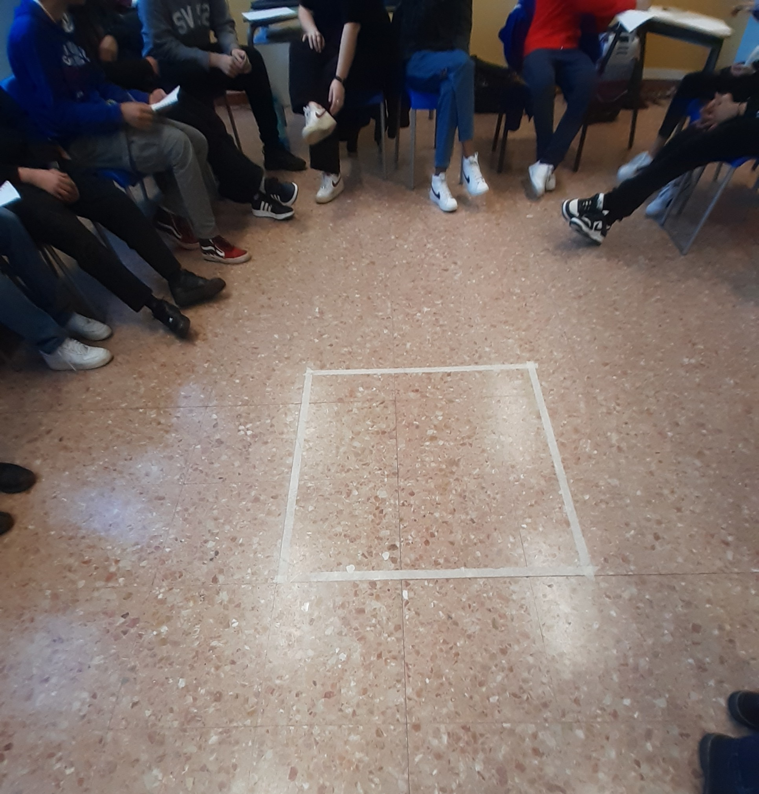
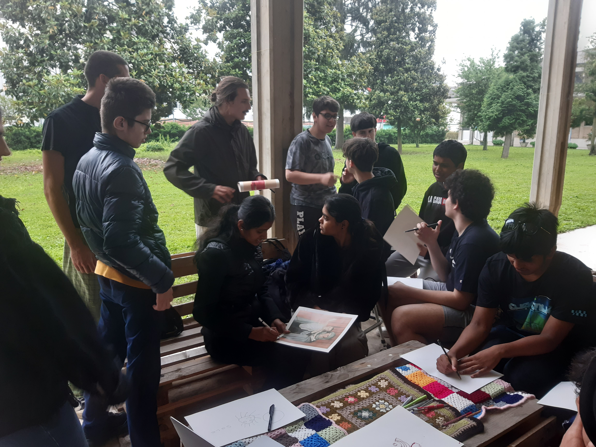
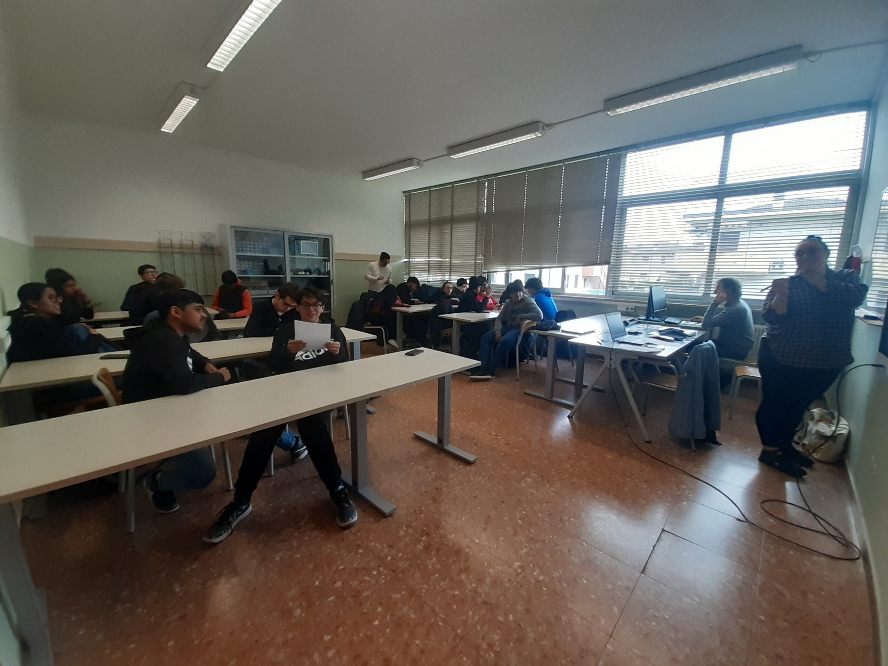
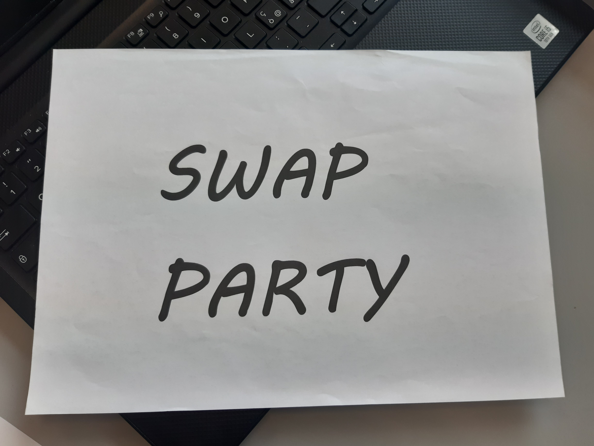

INMOBILITÀ
Sustenibility project

The IN-MOBILITÀ project was created with the goal of transforming underused urban spaces into vibrant and functional places, while promoting sustainable mobility. At the heart of the project lies the collaboration between the school community — made up of students and teachers — and the regeneration of urban spaces. Our approach is simple yet ambitious: to move immobile places toward a more sustainable and accessible future for everyone. IN-MOBILITÀ is a project that aims to make a difference, directly involving schools and the local community in a transformation process focused on the future, sustainability, and collective well-being. A small step for great mobility. This is an urban regeneration and sustainable mobility project, led by the social cooperative Urbana Cooperativa Sociale.
The IN-MOBILITÀ project aims to regenerate unused urban spaces, turning them into vibrant and functional areas, with a strong focus on sustainable mobility. At the core of the initiative is the collaboration between schools and the local community, working together to transform the area in a participatory and future-oriented way. The goal is to promote real change toward a more accessible and sustainable urban environment.

Our primary goal is to regenerate an area dedicated to sustainable mobility by creating spaces that encourage the use of eco-friendly means of transportation. We're talking about bike-sharing stations and parking areas for electric vehicles.

As part of this project, another key objective is the development of spaces connected to the interests of schools, such as a wooden classroom surrounded by greenery.

Understanding students’ routes is essential to improving sustainable mobility, through surveys and analysis of travel habits.
Our primary goal is to regenerate an area dedicated to sustainable mobility by creating spaces that encourage the use of eco-friendly means of transportation. We're talking about bike-sharing stations and parking areas for electric vehicles.
As part of this project, another key objective is the development of spaces connected to the interests of schools, such as a wooden classroom surrounded by greenery.
Understanding students’ routes is essential to improving sustainable mobility, through surveys and analysis of travel habits.
A journey that begins with dialogue: we divided into groups to answer questions that challenged us. The theme? School. Can students truly make a difference in their own school environment? The discussion was lively, thought-provoking, and made us reflect on our active role within the educational community.

The community: a concept that goes beyond mere coexistence. It is sharing, it is relationship. We explored how a group of people come together around a common goal, acting and interacting to build something greater.

Through surveys and discussions with other students, we reflected on our travel habits. Watching a video about Northern European countries opened our eyes to the potential of sustainable mobility, giving us new ideas to think about our future.

School is not just a physical place, but an ecosystem that grows and shapes itself according to the needs of those who experience it. In this meeting, we discussed how we would like our school space to be—from the routes to get there to the spaces that welcome us every day.
The idea is taking shape! We measured, designed, and imagined what our mobility corner would look like. The educators introduced us to Camposaz, sharing their ideas for a sustainable wooden structure.
We brought to life concrete proposals on how to design and promote the mobility corner. Our goal? To create a space that fosters meeting, exchange, and collaboration among peers, with a particular focus on expanding it to include an additional space for holding classes.
.jpg)
A hands-on experience that allowed us to meet experts in design and communication. In Vicenza, we gathered ideas and inspiration, giving a tangible form to our project.
The journey culminates in a moment of great satisfaction: the presentation of our work. Municipal and provincial authorities attended our project presentation, and the mobility corner was finally inaugurated, symbolizing a year of growth and participation.

We took a step back to reflect on the impact of last year’s activities. What did we learn? What can we improve? This meeting was an opportunity to gather challenges and ideas for the new year.

We explored a crucial topic: ethical finance. A system that places people and the environment at its center and guides decisions on where to allocate resources. We reflected on how ethics can steer financial choices, while also learning about some organizations that embrace this approach.

What is a cultural action? We analyzed various examples, from the most formal to the more informal, and put into practice what we learned by planning our own swap party: an event to promote reuse, creativity, and sustainability.
The art of exchanging! At our swap party, we experienced exchanging items—from clothing to stationery, and even books. A fun and practical way to raise awareness about sustainability and conscious consumption.
The bicycle is one of the symbols of sustainable mobility. We learned about its components, how to repair it, and how to ensure our safety. A hands-on session that taught us how to keep our means of transport in perfect condition.

The journey has come to an end, and it’s time to prepare for the final conference. We split into two groups: one focused on preparing the speech to explain how the website was created and the path we followed throughout the two years of the project, and the other dedicated to writing a letter to the institutions.

- Vicenza: IIS Canova
- Vicenza: ITIS Rossi
- Schio: Liceo Tron-Zanella
- Montecchio: IIS Silvio Ceccato
- Thiene: ITET Aulo Ceccato
- mobility coordinator: civi&co e veloCittà
- mobility corner coordinator: Camposaz
- Vicenza: Arci Servizio Civile
- Schio: Samarcanda coop. sociale
- Montecchio: Piano Infinito
- Thiene: Radicà cooperativa sociale
The IIS Antonio Canova of Vicenza, which includes a technical institute and an art high school, participates in the In-mobilità project with a class from the CAT program, currently made up of 18 students. The institute values innovation, professional training, and a solid foundational education.
The ITIS “Alessandro Rossi” of Vicenza, located near the city center, is a historic institute attentive to innovation and dialogue with the local area. It offers five study programs and participated in the In-mobilità project with a mixed group of volunteer second-year students. Today, the group consists of about ten students.
The Tron-Zanella-Martini institute includes all the high schools in Schio: scientific, classical, linguistic, artistic, and human sciences. The class that participated in the project was 4BI, consisting of 22 students. This program places special emphasis on critical analysis, encouraging thoughtful reflection.
Two CAT classes participated in the project, one per year, totaling 39 students. The "Construction, Environment, and Territory" program develops skills in materials, surveying tools, technical software, economic evaluations, environmental management, and safe construction site practices.
PlaNet is a sustainable training platform designed to be accessible, engaging, and inspiring. It focuses on crucial topics such as sustainable food, circular economy, sustainable mobility, energy consumption, and diversity and inclusion (D&I). Using gamification as a learning technique, PlaNet makes skill acquisition an interactive and motivating experience, promoting greater awareness and responsibility toward a more sustainable and inclusive future.
Learn MorePratham Madaan
Manuel Visentin
Giordano Peressini
Gioia Ferrando